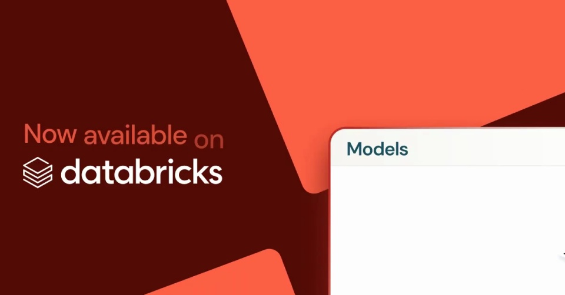
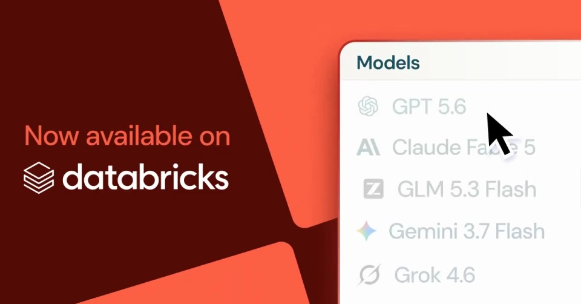
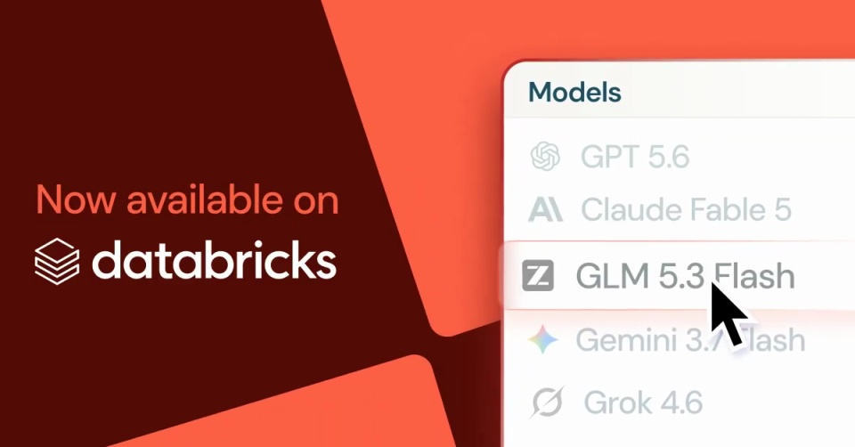
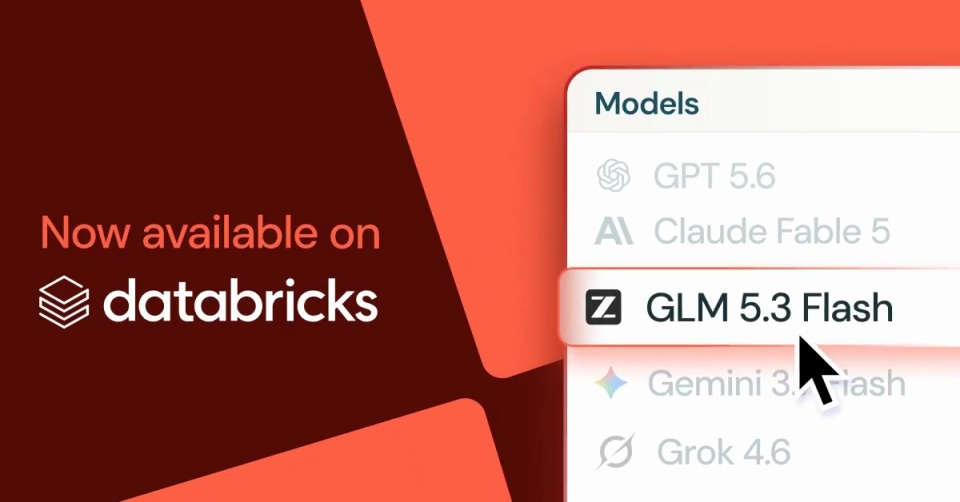

Databricks / V172
Databricks — GLM 5.3 Flash on the Lakehouse
让新模型从现有列表中被选中，并把同一名称同步到品牌公告位置。
构图与编排 可播放 · 可替换内容
整体编排规则示例
查看 HTML 源码
<!doctype html><html lang="zh-CN"><meta charset="utf-8"><meta name="viewport" content="width=device-width,initial-scale=1"><title>Databricks — GLM 5.3 Flash on the Lakehouse · sequence</title><style>html,body{margin:0;width:100%;height:100%;overflow:hidden;background:#540c04}canvas{display:block;width:100%;height:100%;object-fit:contain}</style><body data-mode="sequence"><canvas width="1000" height="600"></canvas><script src="data.js"></script><script src="common.js"></script><script src="scene.js"></script><script src="bridge.js"></script></body></html>画面元素品牌字标倾斜红块模型列表游标选中条
MOTION LANGUAGE
动作与构图
局部动作 · 构图规则
01
列表选择驱动公告
列表选择驱动公告规则示例
查看 HTML 源码
<!doctype html><html lang="zh-CN"><meta charset="utf-8"><meta name="viewport" content="width=device-width,initial-scale=1"><title>Databricks — GLM 5.3 Flash on the Lakehouse · sequence</title><style>html,body{margin:0;width:100%;height:100%;overflow:hidden;background:#540c04}canvas{display:block;width:100%;height:100%;object-fit:contain}</style><body data-mode="clip" data-start="0.5" data-end="3.3"><canvas width="1000" height="600"></canvas><script src="data.js"></script><script src="common.js"></script><script src="scene.js"></script><script src="bridge.js"></script></body></html>右侧白色列表从画外上移，光标经过其他项目后停在目标行。选中条突出并带浅红阴影，左侧名称随后出现。
02
深红背景让白色列表清楚
左侧品牌区域保持留白，红色倾斜大块裁出画幅。用灰字弱化未选项，选中行与公告名称共用强调色。换模型时只替换列表与公告对应的同一个词。
SEQUENCE
段落与节奏
点击段落，定位到上方编排示意。




画面参考 · 离散静帧
KEEP THE RELATIONSHIPS
制作其他主题
- 适合服务上新、菜单新增和插件接入公告。
制作约束
品牌字标 / 倾斜红块 / 模型列表 / 游标 / 选中条
- 右侧白色列表从画外上移，光标经过其他项目后停在目标行。选中条突出并带浅红阴影，左侧名称随后出现。
- 左侧品牌区域保持留白，红色倾斜大块裁出画幅。用灰字弱化未选项，选中行与公告名称共用强调色。换模型时只替换列表与公告对应的同一个词。